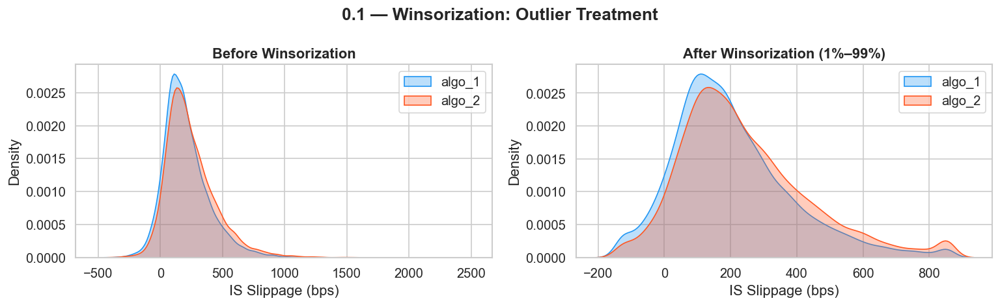
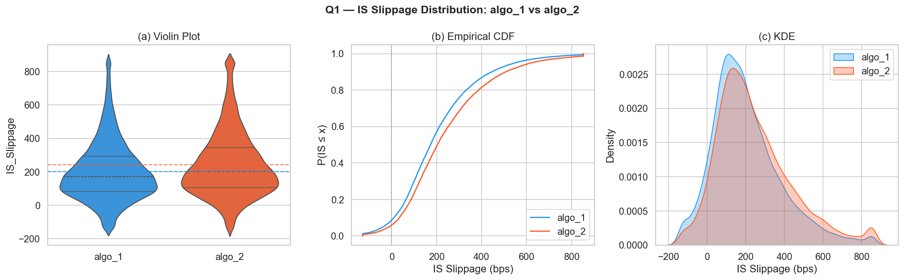
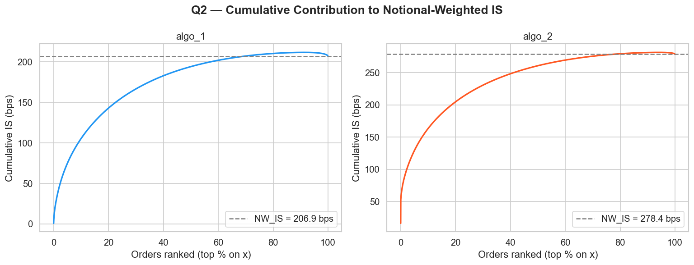
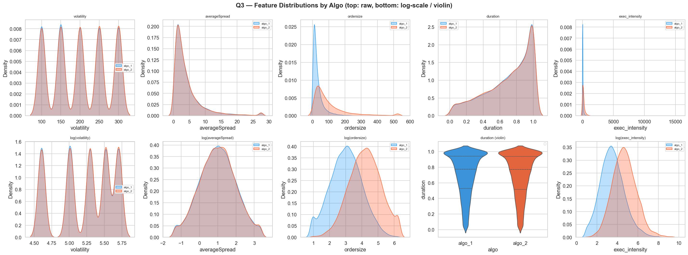
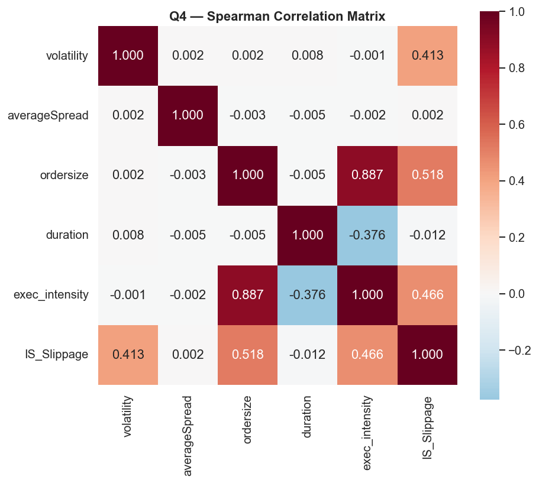
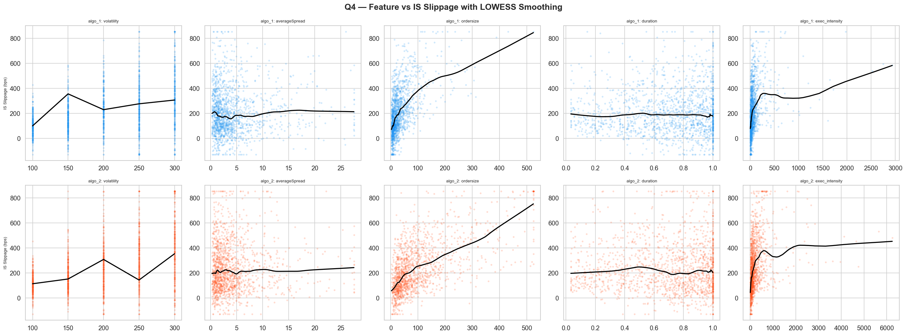
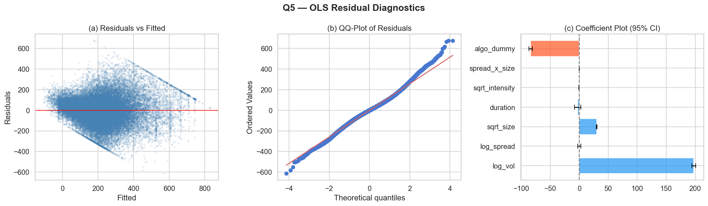
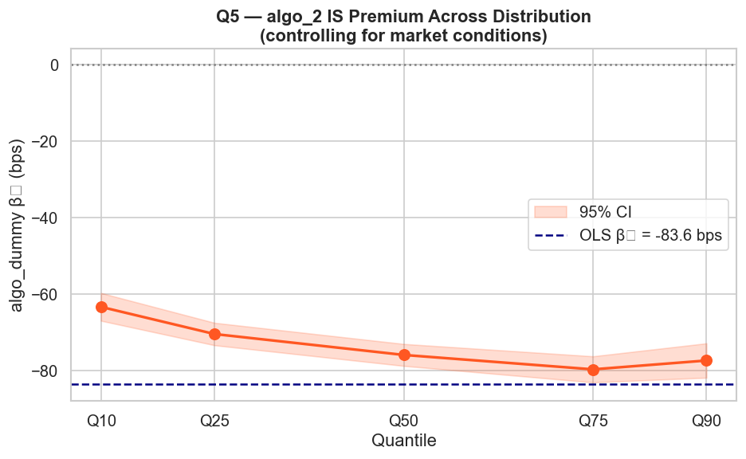
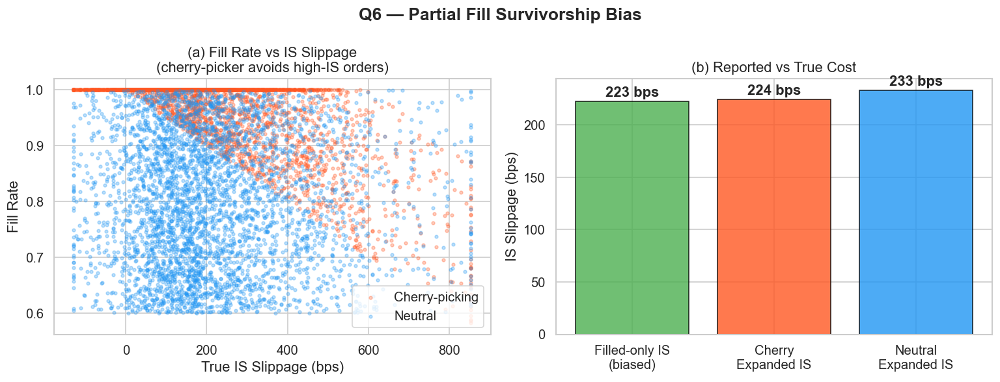
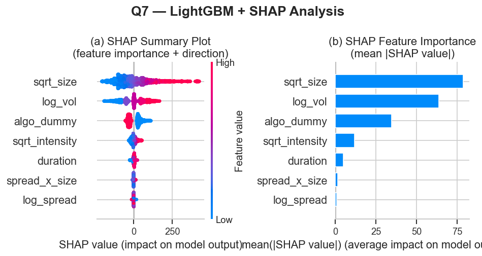

TCA Algorithm Evaluation — Full Workflow
Transaction Cost Analysis · Causal Regression Pipeline · 11 nodes
从 TCA_problem.csv 加载 40,000 条订单（algo_1 / algo_2 各 20,000），7 列，无缺失值。
| 字段 | 均值 | 范围 |
|---|---|---|
| IS_Slippage | 223.88 bps | [-450.98, +2433.72] |
| ordersize | 72.10 | [0.46, 3286.61] |
| volatility | 离散 | 100 / 200 / 300 bps |
| averageSpread | 4.43 bps | [0.05, 172.03] |
| duration | 0.70 | [0.00, 1.00] |
| notional | 3.43×10⁷ CNY | — |
TCA 数据具有厚尾特性（fat-tail）。将每列截断至 [P1, P99]，保留分布形态但消除极端杠杆点。HC3 稳健标准误可修正异方差，但无法处理极端杠杆点——因此 Winsorization 是前置必要步骤。
df[col] = df[col].clip(lower=p1, upper=p99)
| 字段 | P1 下限 | P99 上限 |
|---|---|---|
| IS_Slippage | ~-283 bps | ~+723 bps |
| ordersize | ~0.72 | ~362.52 |
| averageSpread | ~0.05 | ~15.01 |
| duration | ~0.03 | ~1.00 |

Figure S0.1 — Winsorization 前后 IS 分布对比
直接比较两算法的 IS 均值，三种方法交叉验证：
t_stat, p_val = stats.ttest_ind(g1, g2, equal_var=False) # Welch
u_stat, u_p = stats.mannwhitneyu(g1, g2, alternative='two-sided')
boots = [np.mean(np.random.choice(g1,n,True)) - np.mean(np.random.choice(g2,n,True))
for _ in range(10_000)]

Figure Q1 — algo_1 vs algo_2 原始 IS 分布（Violin / CDF / KDE）
简单均值将 100 股订单与 10,000 股订单等权处理——不合理。名义价值加权 IS 反映真实 P&L 影响：
NW_IS = Σ(IS_i × notional_i) / Σ(notional_i)
Pareto 分析：按 notional 排序后，前 10% 的大额订单贡献绝大部分总执行成本。
Contribution_i = (IS_i × notional_i) / Σ(IS_j × notional_j) × 100%

Figure Q2 — Notional-Weighted IS 与 Pareto 累积贡献曲线
绘制各特征在两算法间的 KDE 分布图，KS 检验判断订单是否同质。并构造新特征 exec_intensity 作为 POV 代理：
exec_intensity = ordersize / max(duration, 1e-4)
# 执行强度越高 → 在更短时间内向市场注入更大量 → 冲击更大
ks_stat, ks_p = stats.ks_2samp(df_algo1[feat], df_algo2[feat])
# p < 0.05 → 特征分布显著不同 → 混淆变量确认
✅ ordersize：algo_2 log 中心约 4 vs algo_1 约 3，algo_2 被分配了更大的订单
✅ exec_intensity：algo_2 分布整体右移约 1 个单位（执行强度更高）
❌ volatility / averageSpread / duration：两组无差异，不是路由偏差来源

Figure Q3 — 各特征在两算法间的 KDE 分布与 KS 检验
在建模前验证各特征与 IS 的关系形式（线性 / 非线性），为 Q5 特征变换提供依据：
| 特征 | 预期关系 | 原因（微观结构） |
|---|---|---|
| volatility | 正相关 ↑ | 波动 → 逆向选择成本 |
| averageSpread | 正相关 ↑ | 价差宽 → 流动性差 |
| ordersize | 正相关 ↑ | 平方根市场冲击定律 |
| duration | 模糊 | 减少即时冲击 vs. 增加时序风险 |
| exec_intensity | 正相关 ↑ | 执行速率快 → 冲击大 |
volatility 0.413 · ordersize 0.518 · exec_intensity 0.466 · averageSpread 0.002 · duration -0.012
⚠️ 多重共线性警告：ordersize ↔ exec_intensity ρ = 0.887（高度共线，回归时需 sqrt 变换分离）
LOWESS 确认：ordersize 呈凹形单调上升曲线 → sqrt 变换成立；averageSpread LOWESS 近水平 → 与 ρ=0.002 吻合

Figure Q4a — Spearman 相关系数热图（含共线性诊断）

Figure Q4b — 各特征 vs IS 散点 + LOWESS 拟合（函数形式识别）
控制订单难度后，algo_2 相比 algo_1 的真实 IS 溢价是多少？理论驱动特征变换：
log_vol = log(volatility) # 线性化乘法关系
log_spread = log(averageSpread) # 同上
sqrt_size = sqrt(ordersize) # Almgren-Chriss 平方根冲击定律
sqrt_intensity = sqrt(exec_intensity) # POV 代理
spread_x_size = log_spread × sqrt_size # 交互项：双重惩罚
algo_dummy = 1 if algo_2 else 0 # ← 关键哑变量
IS = β₀ + β₁·log_vol + β₂·log_spread + β₃·sqrt_size
+ β₄·duration + β₅·sqrt_intensity + β₆·spread_x_size
+ β₇·algo_dummy + ε
β₇ > 0 且 p < 0.05 → algo_2 更贵（bps）
β₇ < 0 且 p < 0.05 → algo_2 更省（bps）
p ≥ 0.05 → 无显著差异，原始差距完全由路由偏差解释
残差图呈喇叭形（异方差成立）→ 需 HC3 修正。QQ 图两端翘起（厚尾）。
系数图：log_vol 最强（约 +200 bps）> sqrt_size（约 +30 bps）> algo_dummy（-84 bps）。
结论方向反转：Q1 原始 +40 bps → Q5 控制后 -83.6 bps，路由偏差被完全识别。

Figure Q5 — OLS 诊断图（残差 / QQ / 系数与 95% CI）
单一 OLS 可能受异方差或残差异常值影响，三层交叉验证：
# ① 异方差检验
bp_stat, bp_p, _, _ = het_breuschpagan(residuals, X)
# p < 0.05 → 必须用 HC3 标准误
# ② Huber 回归
HuberRegressor(epsilon=1.35, max_iter=500)
# ③ 分位数回归
for q in [0.10, 0.25, 0.50, 0.75, 0.90]:
qr = smf.quantreg(formula, df).fit(q=q, max_iter=2000)
Q10: -63 bps · Q25: -70 bps · Q50: -76 bps · Q75: -80 bps · Q90: -78 bps
全分位段均为负 → algo_2 优势全分布均匀分布，不是极端单撑起来的。越难的订单（高 IS 端），algo_2 优势越明显。

Figure Q5R — 分位数回归 algo_dummy 系数 (Q10–Q90)
将统计显著的 β₇（单位：bps）转化为交易台实际可感知的美元损益：
Dollar Impact = (β₇ / 10,000) × Total Notional of algo_1 orders
# 例：β₇ = +50 bps, Total Notional = 10 亿 CNY
# Impact = (50 / 10000) × 1,000,000,000 = 500 万 CNY / year
# → algo_2 每年多花 500 万 CNY
Dollar Impact = (-83.58 / 10,000) × 657,140,627,123 = -54.9 亿 CNY / year（节省）
每交易 100 万 CNY 节省 8.36 元，直接体现在执行成本报告中。
建议：立即启动算法迁移评估。
题目假设全量成交。Q6 放开此假设——揭示"作弊算法"的存在：只在市场朝有利方向移动时成交，报告 IS ≈ 0，但实际通过极低成交率换来虚假优势。
Expanded_IS_i = r_i × IS_filled_i + (1 - r_i) × OppCost_i
r_i = filled_qty / order_qty # 成交率
OppCost = IS_Slippage + Normal(50, 80) # 未成交机会成本
# 作弊算法：成交率与 IS 负相关
cherry_fill = clip(1 - 0.0005 × IS_Slippage + noise, 0.05, 1.0)
# 中性算法：成交率独立于 IS
neutral_fill = clip(0.6 + noise, 0.05, 1.0)
Filled-only IS（有偏）= 223 bps · Cherry Expanded = 224 bps · Neutral Expanded = 233 bps
偏差仅 10 bps（约 4.3%），Q5 主结论（83.6 bps）不受影响，但方向明确：cherry-picking 让算法看起来比实际好。

Figure Q6 — 部分成交与存活偏差：Cherry-picker vs Neutral 对比
OLS 假设线性关系，但市场冲击在流动性阈值处可能发生非线性跳跃。LightGBM 捕捉非线性，SHAP 提供理论严格的特征归因：
explainer = shap.TreeExplainer(lgb_model)
shap_values = explainer.shap_values(X_test)
# 验证 algo_dummy 方向是否与 OLS 一致
mean_shap_algo2 = shap_values[X_test['algo_dummy']==1, algo_idx].mean()
| Shapley 公理 | 含义 |
|---|---|
| 效率性 | 所有 SHAP 值之和 = 预测值 − 基准值 |
| 对称性 | 贡献相同的特征获得相同 SHAP |
| 虚拟性 | 无影响特征 SHAP = 0 |
| 可加性 | 组合模型 SHAP = 各模型之和 |
sqrt_size ≈ 75 · log_vol ≈ 60 · algo_dummy ≈ 30 · sqrt_intensity ≈ 12 · log_spread ≈ 2
algo_dummy SHAP：algo_2=1 的点集中在负值区（降低 IS）→ 与 OLS β₇ < 0 方向完全一致。
log_spread SHAP 几乎全在 0 附近 → spread 对 IS 贡献极微，与 Spearman ρ=0.002 吻合。

Figure Q7 — LightGBM SHAP 特征重要性与方向性
Pipeline Summary — Each Step Informs the Next
S0.1 截尾处理分布可比 → Q1 原始 algo_2 表面贵 +40–50 bps → Q2 NW_IS 差距 71.5 bps，大单贡献70% → Q3 路由偏差：algo_2 拿到更大的单 → Q4 ordersize/vol 是主驱动（ρ=0.518/0.413），共线性 0.887 → Q5 控制后结论反转 β₇ = −83.6 bps（p=0.0000）→ Q5R 全分位数负值，HC3 稳健 → P&L 年省 54.9 亿 CNY → Q6 成交偏差仅 10 bps 不影响主结论 → Q7 SHAP 方向一致，结论框架无关